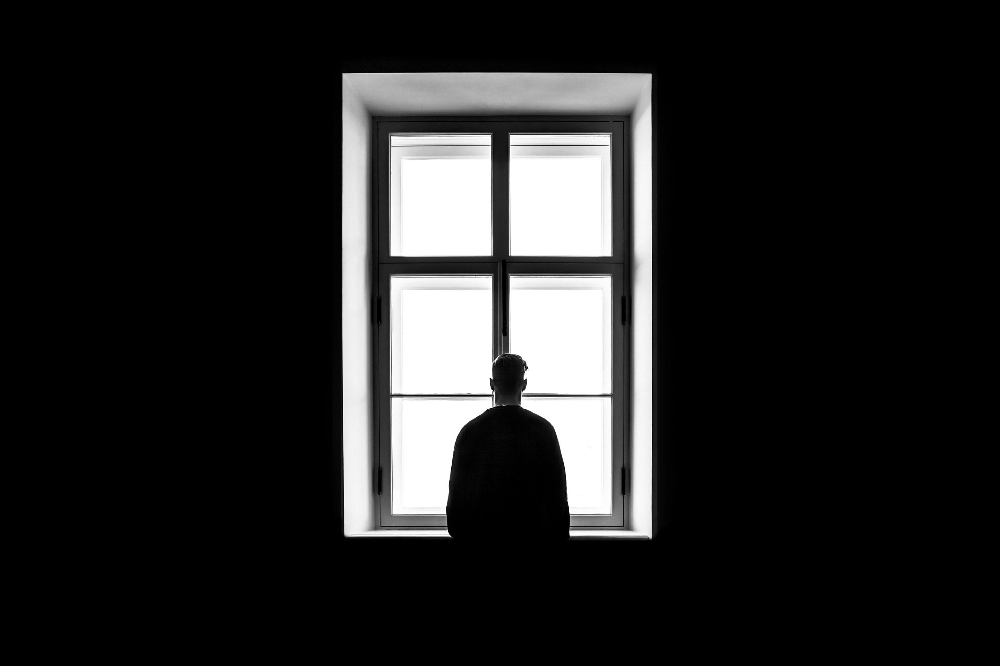
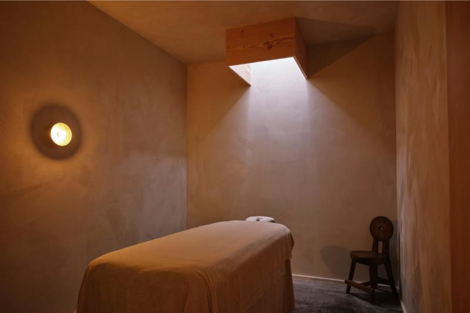

Long Tide · Lineage
The Practitioner
Biodynamic Craniosacral Therapy · Mumbai
I came to this work through scepticism. I was a physiotherapist first, and a fairly impatient one.
i — The story
Something in them was not ready to reorganise.
I was good at the structural side of things — the assessment, the loading, the programme, the measurable progress — and I was increasingly aware that the people who did not get better were not failing to follow instructions. Something in them was not ready to reorganise, and no amount of the right exercise was going to talk them into it.
A colleague suggested I try a craniosacral session as a patient. I spent most of it quietly composing an argument that nothing was happening. Then I sat up, and the room was very clear, and I slept for ten hours for the first time in years. I did not conclude anything mystical. I concluded that I had not been paying attention to something real.
I trained in biodynamic craniosacral therapy over several years, which is how the work is taught: in long intensives, at a pace that understands the difference between learning a technique and developing a sense of touch. I have since completed postgraduate study in working with infants, and in pregnancy and birth.
ii — Method
How I work.
Quietly, mostly. My job in a session is to be steady and keep my attention where the motion is, rather than to steer it.
I am not interested in convincing you of anything, and I do not believe in the version of this work that promises transformation in one hour.
What I will do is be honest with you: about what I notice, about what I think is beyond this work, and about whether I think you should keep coming.
Training & qualifications
- Biodynamic Craniosacral Therapy
- Multi-year practitioner training, completed 2019.
- Infant work
- Postgraduate diploma in infant craniosacral therapy.
- Pregnancy & birth
- Practitioner training in pregnancy and postnatal work.
- Registration
- Member of the relevant professional association, fully insured.
- Supervision
- Continuing professional development annually, with supervision retained throughout.
iii — Positions
A few things I believe.
- Consent is continuous.
- You can stop, move, get up or leave at any point, and it will not be awkward.
- Feeling nothing is allowed.
- Feeling more is not the same as being helped.
- I will tell you when to stop.
- If your problem needs a doctor, a physiotherapist or a psychiatrist, I will say so in the first ten minutes and not book you in.
- I will not go looking.
- The body’s history matters. If something surfaces, it surfaces. It is not my business to dig.

Come and find out whether it suits you.
First appointments run longer, so there is time to talk before anything begins.
Request a time